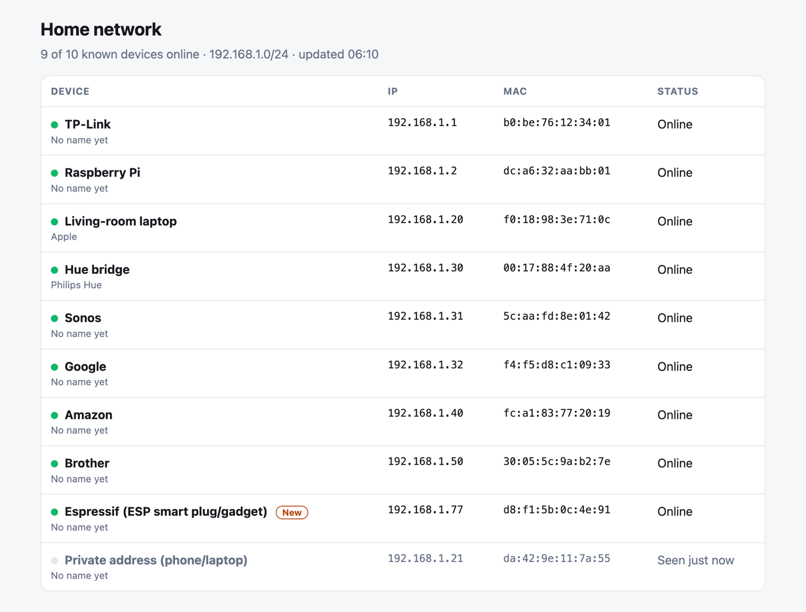
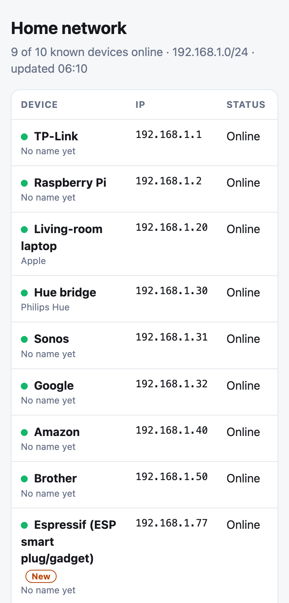

Home Network Monitor
A list of devices on your Wi-Fi, with alerts for new ones.
Open the sample dashboard Get the code


What it does
- Every 5 minutes it pings your network and reads the ARP table, so it sees every device that answers, not just the chatty ones.
- The first scan becomes your baseline. After that, a MAC address it has never seen raises an alert: a log line and, if you want, a push to your phone through the free ntfy app or any webhook.
- Guesses what each device is from its MAC prefix (Hue, Sonos, Raspberry Pi, Espressif smart plug…) and spots phones using a private, per-network address.
- Give devices names (
--name aa:bb:… "Kitchen speaker") and it keeps them. Shows when each one was last seen. - Writes a small dashboard and a JSON file, and can serve them on your LAN. Python standard library only: no root, no cloud.
What a new device looks like
$ python3 main.py --mock --once # run it three times
INFO first scan: learned 9 devices as your baseline (no alerts)
INFO went offline: Private address (phone/laptop) 192.168.1.21
WARNING NEW DEVICE: Espressif (ESP smart plug/gadget) at 192.168.1.77 (d8:f1:5b:0c:4e:91)
INFO 10 online, 10 known
Try it
- Copy the
app/folder to your Pi (any Pi with Python 3; a Mac or Linux laptop works too). - Try the pretend network:
python3 main.py --mock --once, three times. - Watch your real one:
python3 main.py --serve 8088, then openhttp://<pi-name>:8088. - For phone alerts, install ntfy, subscribe to a hard-to-guess topic, and add
--alert-url https://ntfy.sh/<topic>. - To run at boot: copy
service.serviceto/etc/systemd/system/home-network-monitor.service, thensudo systemctl enable --now home-network-monitor.
Only watch networks you own or run. The dashboard has no login, so keep it on your home network.